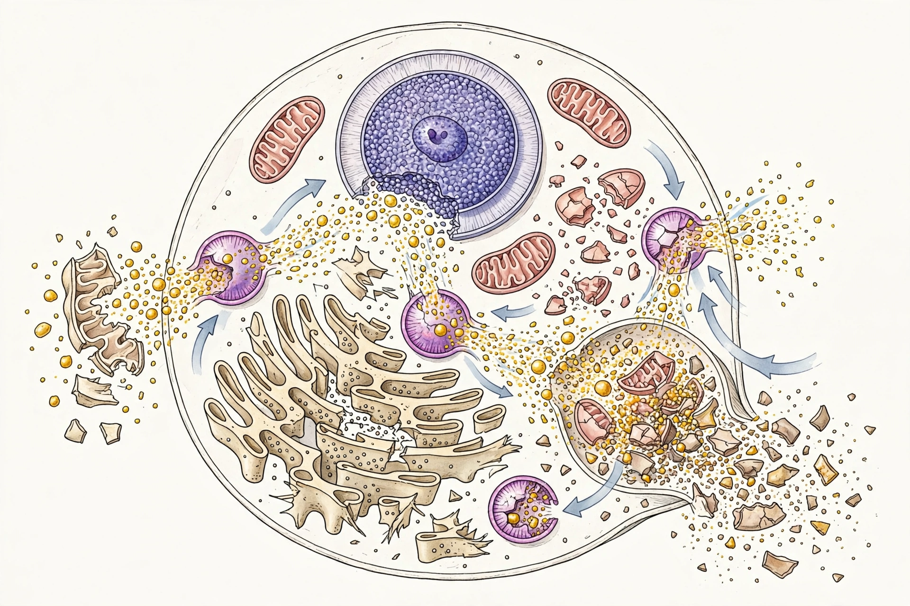

Autolysis, more commonly known as self-digestion, is the breakdown of a cell through the action of its own enzymes, particularly lysosomal enzymes released when cell membranes fail. It may occur in living organisms in some circumstances, but most commonly refers to post-mortem changes in tissues.

After cell death, oxygen deprivation causes lysosomal membranes to become permeable. Hydrolases such as proteases, lipases and nucleases escape and digest cell components. Tissues rich in digestive enzymes — pancreas, gastric mucosa, liver — autolyse fastest, a fact important in forensic pathology for estimating post-mortem interval.
Controlled autolysis is exploited in food production: yeast autolysate (e.g., Marmite, Vegemite) is made by allowing yeast cells to self-digest, and autolysis in baking contributes flavour when dough rests. In winemaking, ageing on lees allows yeast autolysis to add complexity. In biology, autolysis differs from autophagy, a regulated living-cell recycling process.
Autophagy · Lysosome · Necrosis · Decomposition
Recreated from memory.